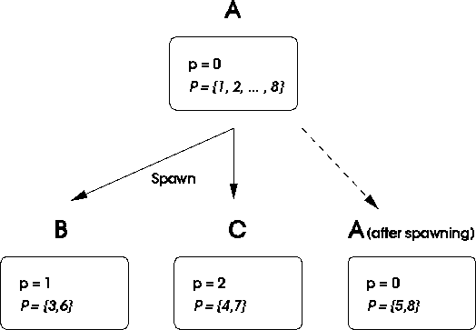

In order to get higher speed, Monte Carlo applications make extensive use of parallel computers, since these calculations are particularly well suited to such architectures and often require very long runs. A common way to parallelize Monte Carlo is to put identical ``clones '' on the various processors; only the random number sequences are different. It is therefore important for the sequences on the different processors to be uncorrelated. That is, given an initial segment of the sequence on one process, and the random number sequences on other processes, we should not be able to predict the next element of the sequence on the first process. For example, it should not happen that if we obtain random numbers of large magnitude on one process, then we are more likely to obtain large numbers on another.
Consider the following extreme case to demonstrate the impact of correlations. Suppose we perform identical calculations on each process, expecting different results due to the presence of a different random number sequence. If, however, we use the same sequence on each process, then we will get an identical result on each process and the the power of the parallel computer is wasted. Even worse we may incorrectly believe that the errors are much reduced because all processes give identical results. Such cases routinely occur when users first port their MC codes to parallel computers without considering how the random number sequence is to be parallelized.
Even if the correlations across processes are not perfect, any correlation can affect the random walk. It is generally true that inter-processor correlation is less important that intra-processor correlation, but that can depend on the application. The danger is that a particular parallel application will be sensitive to a particular correlation. New statistical tests have to be invented for correlation between processors.
The desire for reproducibility, when combined with speed, is also an important factor, and limits the feasible parallelization schemes. We shall next describe some common schemes for creating PPRNGs along with their merits.
One can maintain one particular process that serves as a centralized random number generator for all the processes. Any process that requires a random number obtains it from that process by sending messages. Such a scheme reduces the speed greatly since inter-processor communication is very expensive and the process needing the PRN must have exclusive access to the server to ensure that there are no conflicts. It also hinders reproducibility because the different processes may request random numbers in different orders in different runs of the program, depending on the network traffic and implementation of the communication software.
In one popular scheme the same iteration process is used on the different processes, but with widely separated seeds on each process. There are two related schemes: (i) the leap frog method where processor i gets , where M is the total number of processes. For example, process 1 gets the first member of the sequence, process 2 the second and so forth. (ii) In the cycle splitting method for M processors, process i+1 gets , where l is the cycle length. That is, the first process will get the first L/M numbers, the second process the second L/M numbers, and so forth.
Both methods require a fast way of advancing the PRNG a few steps; faster than iterating the sequence that number of steps. In the first method we need to be able to advance by M steps at each iteration. In the second method we need to be able to advance by L/M steps during initialization.
Statistical tests performed on the original sequence are not necessarily adequate for the divided sequence. For example, in the leap frog method correlations M numbers apart in the original sequence become adjacent correlations of the split sequence.
Clearly either method reduces the period of the original sequence by the number of processes. For example, with 512 nodes running at 100 MFlops one will exhaust the sequence of a PRNG with a 46 bit internal state (the common real*8 or long rng) in only 23 minutes! If the number of random numbers consumed is greater than expected, then the sequences on different processes could overlap.
Another scheme makes use of the fact that some PRNGs have more than one cycle. If we choose the seeds carefully, then we can ensure that each random sequence starts out in a different cycle, and so two sequences will not overlap. Thus the seeds are parameterized (that is, sequence i gets a seed from cycle i, the sequence number being the parameter that determines its cycle). This is the case for the Lagged Fibonacci Generator described in the next section.
Just as the disjoint cycles can be parameterized, so can many of the iteration functions for the internal state as with the Generalized Feedback Shift Register described in the next section. Here, sequence i gets iteration function .
It is difficult to ensure reproducibility if the number of processors changes between one run and the next. This problem cannot be solved by the PPRNG in itself. In order to write a parallel MC application which gives identical results with a variable number of processors, it is necessary to write in terms of "virtual processors", each virtual processor having its own PRNG. Each physical processor would handle several virtual processors. It is unlikely that many programmers would go to this much trouble just to ensure that their code has this degree of portability unless it can be done automatically.
There are other consequences of the desire for reproducibility and speed. As an example, consider the simulation of a branching process. Suppose ``neutron'' paths are generated based on the outcome of various interactions between the neutrons and a medium. During a neutron flight, the neutron may collide with an atom and produce new neutrons (fission) or be absorbed (fusion). Efficient utilization of the processors requires good load balancing, and so one can move the computation of the statistics for new neutrons to different processors in order to keep the work evenly balanced. To ensure reproducibility in different runs, each neutron must be given a different random number sequence in a deterministic fashion. Thus, in a repetition of a run, even if the neutron is migrated to a different processor, the same random number sequence will be produced in determining its path. We also need to ensure that the random number sequence produced for each neutron is unique without incurring inter-processor communication. This can be accomplished by developing the ability to ``spawn'' unique sequences from an existing one.
We take the model that when a new process forks, a new sequence is
generated for that process. Each sequence can be identified by a
parameter if we parallelize the generators by any of the methods of
parameterization described earlier. We ensure uniqueness of the new
sequence by assigning each process
a set of parameters available for
spawning. When a process forks,
it partitions
the elements of among itself and its children, to
create new sets of parameters available for spawning as shown in
Fig.  . Since the sets available for spawning on each
process are disjoint, different sequences are obtained on each
process. There is, however, the risk that eventually all the
parameters could be used up; so we should not spawn too often. In the
next section we will discuss some generators with very large numbers of
possible parameters, so that quite a lot of spawning could be done
before we would be in danger
of repeating parameters.
. Since the sets available for spawning on each
process are disjoint, different sequences are obtained on each
process. There is, however, the risk that eventually all the
parameters could be used up; so we should not spawn too often. In the
next section we will discuss some generators with very large numbers of
possible parameters, so that quite a lot of spawning could be done
before we would be in danger
of repeating parameters.

Figure: Process A spawns processes B and C. Each new process
gets a new random number sequence parameterized by p and a set of
parameters for spawning.
On today's parallel computers communication is very slow compared to floating point performance. It is sometimes possible to use multiple random number sequences to reduce the communication costs in a Monte Carlo simulation. An example occurs in our parallel path integral calculations [19]. The total configuration space of the imaginary time path is divided into subspaces based on the ``imaginary time'' coordinate so that a given processor has control over a segment of imaginary time. Most moves are made on variables local to each processor but occasionally there are global moves to be made which move all values of imaginary time, where each processor has to evaluate the effect of the move on its variables. For these moves the number of messages can be cut in half by having available two different sequences of random numbers on each processor: (i) a local sequence which is different on each processor (and uncorrelated) and (ii) a global sequence shared by all processors. The global sequence permits all the processors to ``predict'' without communication what the global move will be, evaluate its consequence on their variables, and then ``vote'' whether that global move is acceptable. Thus half of the communication and synchronization cost is avoided compared to the scheme whereby a master processor would generate the global move, send it out to all the workers and tally up the results from the various processors.